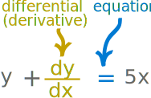
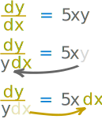

Differential Equations Solution Guide
A Differential Equation is an equation with a function and one or more of its derivatives:

Example: an equation with the function y and its derivative dy dx
In our world things change, and describing how they change often ends up as a Differential Equation.
Real world examples where Differential Equations are used include population growth, electrodynamics, heat flow, planetary movement, economic systems and much more!
Solving
A Differential Equation can be a very natural way of describing something.
Example: Population Growth
This short equation says that a population "N" increases (at any instant) as the growth rate times the population at that instant:
dNdt = rN
But it is not very useful as it is.
We need to solve it!
We solve it when we discover the function y (or set of functions y) that satisfies the equation, and then it can be used successfully.
Example: continued
Our example is solved with this equation:
N(t) = N0ert
What does it say? Let's use it to see:
With t in months, a population that starts at 1000 (N0) and a growth rate of 10% per month (r) we get:
- N(1 month) = 1000e0.1x1 = 1105
- N(6 months) = 1000e0.1x6 = 1822
- etc
There is no magic way to solve all Differential Equations.
But over the millennia great minds have been building on each others work and have discovered different methods (possibly long and complicated methods!) of solving some types of Differential Equations.
So let’s take a look at some different types of Differential Equations and how to solve them:
Separation of Variables

Separation of Variables can be used when:
- All the y terms (including dy) can be moved to one side of the equation, and
- All the x terms (including dx) to the other side.
If that is the case, we can then integrate and simplify to get the the solution.
First Order Linear
First Order Linear Differential Equations are of this type:
They are "First Order" when there is only dy dx (not d2y dx2 or d3y dx3 , etc.)
Note: a non-linear differential equation is often hard to solve, but we can sometimes approximate it with a linear differential equation to find an easier solution.
Homogeneous Equations
Homogeneous Differential Equations look like this:
v = y x
which can then be solved using Separation of Variables .
Bernoulli Equation
Bernoull Equations are of this general form:
dydx + P(x)y = Q(x)yn
where n is any Real Number but not 0 or 1
- When n = 0 the equation can be solved as a First Order Linear Differential Equation.
- When n = 1 the equation can be solved using Separation of Variables.
For other values of n we can solve it by substituting u = y1−n and turning it into a linear differential equation (and then solve that).
Second Order Equation
Second Order (homogeneous) are of the type:
Notice there is a second derivative d2y dx2
The general second order equation looks like this
a(x)d2y dx2 + b(x)dy dx + c(x)y = Q(x)
There are many distinctive cases among these equations.
They are classified as homogeneous (Q(x)=0), non-homogeneous, autonomous, constant coefficients, undetermined coefficients etc.
For non-homogeneous equations the general solution is the sum of:
- the solution to the corresponding homogeneous equation, and
- the particular solution of the non-homogeneous equation
Undetermined Coefficients
The Undetermined Coefficients method works for a non-homogeneous equation like this:
d2ydx2 + P(x)dydx + Q(x)y = f(x)
where f(x) is a polynomial, exponential, sine, cosine or a linear combination of those. (For a more general version see Variation of Parameters below)
This method also involves making a guess!Variation of Parameters
Variation of Parameters is a little messier but works on a wider range of functions than the previous Undetermined Coefficients.
Exact Equations and Integrating Factors
Exact Equations and Integrating Factors can be used for a first-order differential equation like this:
M(x, y)dx + N(x, y)dy = 0
that must have some special function I(x, y) whose partial derivatives can be put in place of M and N like this:
∂I∂xdx + ∂I∂ydy = 0
Ordinary Differential Equations (ODEs) vs Partial Differential Equations (PDEs)
All of the methods so far are known as Ordinary Differential Equations (ODE's).
The term ordinary is used in contrast with the term partial to indicate derivatives with respect to only one independent variable.
Differential Equations with unknown multi-variable functions and their partial derivatives are a different type and require separate methods to solve them.
They are called Partial Differential Equations (PDE's), and sorry, but we don't have any page on this topic yet.